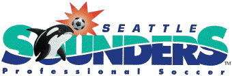

The Seattle Sounders started in 1974 in the NASL (North American Soccer League) where they played indoor and outdoor soccer professionally. The Seattle Sounders logo started out as a simple logo with just the name and two colors green and cyanish. The Seattle Sounders would start with a white jersey with blue stripes and a blue jersey with white strpies as their first ever jerseys. The Seattle Sounders started in Memorial Statium for the first two seasons and then moved to the Kingdome. This version of the Seattle Soudners though, would only last from 1974 to 1983.

{kind=link}
The Seattle Sounders would then come back to life in 1994 and played in the USL First DIvision (United Soccer Leagues First Division) where they played outdoor soccer professionally. The new Seattle Sounders logo would now change colors from green adn cyanish to turquois and blue. The logo also added an orca whale heading a soccer ball who would be soon known as Sammy the the Sounder. The new Seattle Sounders jerseys would be just plain white and blue with stripes going across from left to right. The new Seattle Sounders played Starfire Sports Complex which only held 4,500 people and was managed by Brian Schmetzer. This team lasted from 1994 to 2008.
{kind=link}
Now we come to the present day Seattle Sounders FC who started in 2009 and play in the MLS (Major Leadue Soccer) where they coninue to play outdoor soccer professionally. The Seattle Sounders FC logo has now evolved into a real logo with their name and the Space Needle that represents Seattle. The colors have changed once and for all to Rave Green, Sounder Blue and Cascade Shale. The Seattle Sounders FC have always had a Rave Green jersey with blue shorts as their primary colors and their secondary jersey for 2019 is Nightfall which is black and pink. The Seattle Sounders FC play in CenturyLink Field along with the Seattle Seahawks. The Field capacity for the Seattle Sounders FC is 37,722 on average but can reach up to 72,000 for big games. The Seattle Sounders FC have never missed a playoff since they joined the MLS and hold the record for 11 straight post seasons. Not only do they have the record for most post seasons but they also have the most consecutive wins during the regular season. The Seattle Sounders FC also held the biggest attendance record for a very long time. They also have the best record over the past eleven seasons.
The Seattle Sounders FC has a develpomentall team. This team helps players develop to be ready for the pros. The team used to be called S2 (Sounders two) but now have become an official team in the USL as the Tacoma Defiance, wearing navy blue and white.
{kind=link}